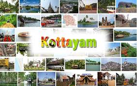
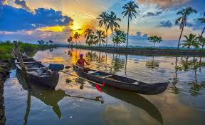

KOTTAYAM – THE LAND OF LETTERS, LAKES, AND RUBBER
Kottayam, known as the “Land of Letters” due to its high literacy rate, is also famous for its lush rubber plantations, serene backwaters, and historical significance. It serves as a gateway to the Kerala backwaters, hill stations, and spiritual destinations. Rich in culture and natural beauty, Kottayam is perfect for travelers who love a mix of education, tradition, and scenic landscapes.

Tourist Attractions
- Vembanad Lake & Kumarakom Bird Sanctuary – Spot migratory birds, enjoy boat rides, and witness stunning sunsets over Kerala’s largest lake.
- Thazhathangady Juma Masjid – A centuries-old mosque with unique architecture and wood carvings.
- Ilaveezhapoonchira – A hill station surrounded by misty peaks, ideal for trekking and nature photography.
- St. Mary’s Church, Pala – A historic church known for its beautiful murals and architecture.
- Mundakayam & Vagamon – Nearby hill stations offering tea plantations, rolling hills, and cool climate retreats..

Unique Experiences
- Explore traditional Kerala villages via backwater houseboats or canoe rides.
- Visit local rubber plantations and understand the process from tapping to processing.
- Attend cultural performances like classical music and Kathakali in local community centers..
- Witness the Kottayam Boat Race, a local festival celebrating traditional snake boats.
Foods to Try
- Puttu and Kadala Curry (steamed rice cakes with black chickpeas)
- Fish Molee (mild coconut-based fish curry)
- Tapioca with spicy Kerala-style curries
- Banana Chips & Pazham Pori (banana fritters)